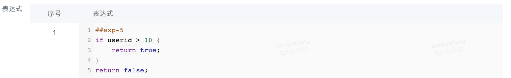
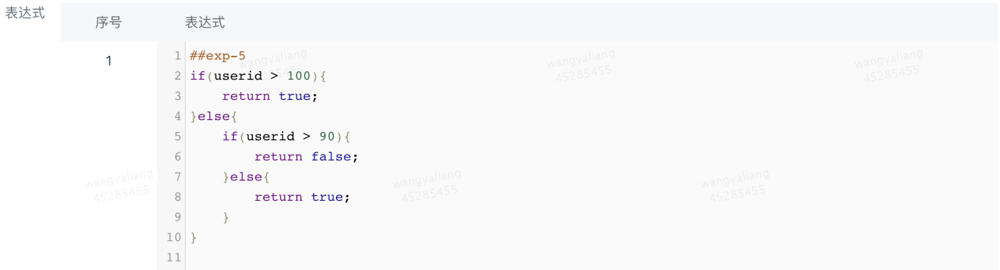
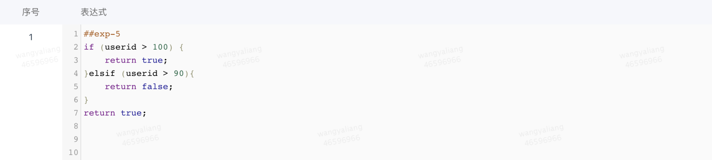

说明：表达式书写说明
1.简介
表达式：在Zeus上规则、因子主要内容信息中使用，用于计算规则的执行结果
Aviator表达式简介2.特性
- 支持大部分运算操作符，包括算术操作符、关系运算符、逻辑操作符、位运算符、正则匹配操作符(=~)、三元表达式?: ，支持操作符的优先级和括号强制优先级，具体请看后面的操作符列表。
- 支持大整数和精度运算
- 支持函数调用和自定义函数
- 内置支持正则表达式匹配
- 自动类型转换，当执行操作的时候，会自动判断操作数类型并做相应转换，无法转换即抛异常。
- 支持传入变量，支持类似a.b.c的嵌套变量访问
- 支持if/elsif/else条件语句
- 支持for/while 循环语句，以及 break / continue
- 支持return 语句
Aviator的限制：
不支持八进制数字字面量，仅支持十进制和十六进制数字字面量。
Zeus上科学计数法的正确书写方式：目前可支持的方式4.5E13，4.5E-12，4.5e13，4.5e-12，因底层基础不支持！！！不支持4.5e+12，4.5E+12的书写方式。
Aviator表达式简介Aviator表达式简介3. 语法手册
Aviator表达式简介3.1 数据类型及运算
1） 数字
（1）整数和算数运算
- 没有 byte/short/int 等类型，统一整数类型都为 long，支持的范围：-9223372036854774808~9223372036854774807。
- 整数也可以用十六进制表示，以 0x 或者 0X 开头的数字，比如 0xFF(255)、0xAB(171) 等等。
（2）大整数(BigInt)
- 任何超过 long 范围的整数字面量，会自动提升为 BigInteger 对象（以下简称 BigInt)，例如10223372036854774807远超过long，自动提升为BigInt;
- 任何数字以 N 字母结尾就自动变 BigInt，如1000N
- 默认的 long 类型在计算后如果超过范围溢出后，不会自动提升为 BigInt，但是 BigInt 和 long 一起参与算术运算的时候，结果为 BigInt 类型
（3）浮点数
- 仅支持 double 类型，也就是双精度 64 位，符合 IEEE754 规范的浮点数。所有的浮点数都被认为是 double 类型。浮点数的表示形式有两种：
① 十进制的带小数点的数字，比如 1.34159265 ， 0.33333 等等。
② 科学计数法表示，如 1e-2 ， 2E3 等等，大小写字母 e 皆可。
- 浮点数的运算符跟整数一样，同样支持加减乘除，优先级也是一样。浮点数和浮点数的算术运算结果为浮点数，浮点数和整数的运算结果仍然为浮点数。
（4）高精度计算( Decimal)
- 主要浮点数以 M 结尾就会识别类型为 deicmal，例如 1.34M 、 0.333M 或者科学计数法 2e-3M 等等。
- decimal 同样使用 +,-,*,/ 来做算术运算
2） 字符串
- 只要以单引号或者双引号括起来的连续字符就是一个完整的字符串对象，如'hello world'，“hello world”，'a’，“a”
- 字符串拼接可以用 + 号
- 变量如果传入的是String或者Character也将转为String类型。
3）布尔类型和逻辑运算
Bool类型： 常量true和false，表示真值和假值。
4）变量类型
与Java的变量命名规则相同，变量的值由用户传入，如"a"、"b"等
6）nil类型
常量nil,类似java中的null，但是nil比较特殊，nil不仅可以参与==、!=的比较，也可以参与>、>=、<、<=的比较，Aviator规定任何类型都大于nil除了nil本身，nil==nil返回true。用户传入的变量值如果为null，那么也将作为nil处理，nil打印为null。
"nil == nil"; //true
" 3> nil"; //true
" true!= nil"; //true
" ' '>nil "; //true
" a==nil "; //true,a is null3.2 操作符
1） 算术运算符
Aviator支持常见的算术运算符，包括+ - * / % 五个二元运算符，和一元运算符"-"。其中 - * / %和一元的"-"仅能作用于Number类型。
"+"不仅能用于Number类型，还可以用于String的相加，或者字符串与其他对象的相加。Aviator规定，任何类型与String相加，结果为String。
类型转换说明
（1）当big int或者decimal和其他类型的数字做运算的时候，按照 long < big int < decimal < double的规则做提升，也就是说运算的数字如果类型不一致，结果的类型为两者之间更“高”的类型。
例如:
- 1 + 3N， 结果为big int的4N
- 1 + 3.1M，结果为decimal的4.1M
- 1N + 3.1M，结果为decimal的4.1M
- 1.0 + 3N，结果为double的4.0
- 1.0 + 3.1M，结果为double的4.1
（2）大数计算和精度
"99999999999999999999999999999999+99999999999999999999999999999999"
结果为类型big int的：
199999999999999999999999999999998
（3）字符串
" 'hello '+3 "; //字符串 hello 3
" 'hello '+ unknow "; //字符串 hello null
Aviator表达式简介2）逻辑运算符
Avaitor的支持的逻辑运算符包括，一元否定运算符"!"，以及逻辑与的"&&"，逻辑或的"||"。逻辑运算符的操作数只能为Boolean。
Aviator表达式简介3）关系运算符
Aviator支持的关系运算符包括"<" "<=" ">" ">=" 以及"=="和"!=" 。
&&和||都执行短路规则。
关系运算符可以作用于Number之间、String之间、Pattern之间、Boolean之间、变量之间以及其他类型与nil之间的关系比较，不同类型除了nil之外不能相互比较。
Aviator规定任何对象都比nil大除了nil之外。
Aviator表达式简介4）位运算符
Aviator支持所有的Java位运算符，包括"&" "|" "^" "~" ">>" "<<" ">>>"。
Aviator表达式简介5）匹配运算符
匹配运算符"=~"用于String和Pattern的匹配，它的左操作数必须为String，右操作数必须为Pattern。匹配成功后，Pattern的分组将存于变量$num，num为分组索引。
正则语法样例：email=~/([\w0-8]+)@\w+[\.\w+]+/ ? $1:'unknow'email与正则表达式//([\\w0-8]+@\\w+[\\.\\w+]+)/通过=~操作符来匹配，结果为一个Boolean类型，因此可以用于三元表达式判断，匹配成功的时候返回$1，指代正则表达式的分组1，也就是用户名，否则返回unknown。这个例子将打印killme2008这个用户名。
Aviator表达式简介6）三元运算符
Aviator没有提供if else语句，但是提供了三元运算符 "?:"，形式为 bool ? exp1: exp2。 其中bool必须为结果为Boolean类型的表达式，而exp1和exp2可以为任何合法的Aviator表达式，并且不要求exp1和exp2返回的结果类型一致。
"a>0? 'yes':'no'"Aviator表达式简介3.3 操作符列表
Aviator支持操作符的优先级，并且允许通过括号来强制优先级，下面是完整的操作符列表，按照优先级从高到低的顺序排列：
|
序号 |
操作符 |
结合性 |
操作数限制 |
|
0 |
() [ ] |
从左到右 |
()用于函数调用，[ ]用于数组和java.util.List的元素访问，要求[indx]中的index必须为整型 |
|
1 |
! - ~ |
从右到左 |
! 能用于Boolean,- 仅能用于Number,~仅能用于整数 |
|
2 |
* / % |
从左到右 |
Number之间 |
|
3 |
+ - |
从左到右 |
+ - 都能用于Number之间, + 还能用于String之间，或者String和其他对象 |
|
4 |
<< >> >>> |
从左到右 |
仅能用于整数 |
|
5 |
< <= > >= |
从左到右 |
Number之间、String之间、Pattern之间、变量之间、其他类型与nil之间 |
|
6 |
== != =~ |
从左到右 |
==和!=作用于Number之间、String之间、Pattern之间、变量之间、其他类型与nil之间以及String和java.util.Date之间，=~仅能作用于String和Pattern之间 |
|
7 |
& |
从左到右 |
整数之间 |
|
8 |
^ |
从左到右 |
整数之间 |
|
9 |
| |
从左到右 |
整数之间 |
|
10 |
&& |
从左到右 |
Boolean之间，短路 |
|
11 |
|| |
从左到右 |
Boolean之间，短路 |
|
12 |
? : |
从右到左 |
第一个操作数的结果必须为Boolean，第二和第三操作数结果无限制 |
Aviator表达式简介3.4 类型转换规则
- 当两个操作数都是Double或者都是Long的时候，各自按照Double或者Long的类型执行，数字运算溢出不会做自动类型提升。
- 当两个操作数中某一个是Double的时候，无论另一个操作数字是什么类型都将被转换成Double，按照Double类型执行。
- 当两个操作数分别是big int和long的时候，结果为big int。
- 当两个操作数分别为decimal和long，结果为decimal。
- 当两个操作数分别为decimal和big int，结果为decimal。
- 简单来说，可以认为 long < big int < decimal < double，当两个操作数类型不同的时候，结果的类型为两个类型中更高的一个。
- 任何类型与String相加，结果为String
- 没有规定的类型转换操作，除了未知的变量类型之间，都将抛出异常。
- 当我们想表示一个变量还没有赋值的时候，需要用到 nil 这个特殊类型，它和 java 中的 null 作用一样，表示当前变量还没有赋值。nil 最常见的场景就是用于判断变量是否为 null。
- 但是nil比较特殊，nil不仅可以参与==、!=的比较，也可以参与>、>=、<、<=的比较，Aviator规定任何类型都n大于nil除了nil本身，nil==nil返回true。用户传入的变量值如果为null，那么也将作为nil处理，nil打印为null。
"nil == nil"; //true
" 3> nil"; //true
" true!= nil"; //true
" ' '>nil "; //true
" a==nil "; //true,a is null3.5 函数
函数调用样例
"string.length('hello')";string.length('hello')是一个函数调用，string.length是一个函数,'hello'是调用的参数。
函数可以嵌套调用
"string.contains(\"test\",string.substring('hello',1,2))"通过string.substring('hello',1,2)获取字符串'e'，然后通过函数string.contains判断e是否在'test'中
1）内置函数
|
函数名称 |
说明 |
|
sysdate() |
返回当前日期对象java.util.Date |
|
rand() |
返回一个介于0-1的随机数，double类型 |
|
print([out],obj) |
打印对象，如果指定out，向out打印，否则输出到控制台 |
|
println([out],obj) |
与print类似，但是在输出后换行 |
|
now() |
返回System.currentTimeMillis |
|
long(v) |
将值的类型转为long |
|
double(v) |
将值的类型转为double |
|
str(v) |
将值的类型转为string |
|
date_to_string(date,format) |
将Date对象转化化特定格式的字符串,2.1.1新增 |
|
string_to_date(source,format) |
将特定格式的字符串转化为Date对象,2.1.1新增 |
|
string.contains(s1,s2) |
判断s1是否包含s2，返回Boolean |
|
string.length(s) |
求字符串长度,返回Long |
|
string.startsWith(s1,s2) |
s1是否以s2开始，返回Boolean |
|
string.endsWith(s1,s2) |
s1是否以s2结尾,返回Boolean |
|
string.substring(s,begin[,end]) |
截取字符串s，从begin到end，end如果忽略的话，将从begin到结尾，与java.util.String.substring一样。 |
|
string.indexOf(s1,s2) |
java中的s1.indexOf(s2)，求s2在s1中的起始索引位置，如果不存在为-1 |
|
string.split(target,regex,[limit]) |
Java里的String.split方法一致,2.1.1新增函数 |
|
string.join(seq,seperator) |
将集合seq里的元素以seperator为间隔连接起来形成字符串,2.1.1新增函数 |
|
string.replace_first(s,regex,replacement) |
Java里的String.replaceFirst 方法，2.1.1新增 |
|
string.replace_all(s,regex,replacement) |
Java里的String.replaceAll方法 ，2.1.1新增 |
|
math.abs(d) |
求d的绝对值 |
|
math.sqrt(d) |
求d的平方根 |
|
math.round(d) |
求d四舍五入后的值，效果同java math.round，返回double |
|
math.pow(d1,d2) |
求d1的d2次方 |
|
math.log(d) |
求d的自然对数 |
|
math.log10(d) |
求d以10为底的对数 |
|
math.sin(d) |
正弦函数 |
|
math.cos(d) |
余弦函数 |
|
math.tan(d) |
正切函数 |
|
map(seq,fun) |
将函数fun作用到集合seq每个元素上，返回新元素组成的集合 |
|
filter(seq,predicate) |
将谓词predicate作用在集合的每个元素上，返回谓词为true的元素组成的集合 |
|
count(seq) |
返回集合大小 |
|
include(seq,element) |
判断element是否在集合seq中，返回boolean值 |
|
sort(seq) |
排序集合，仅对数组和List有效，返回排序后的新集合 |
|
reduce(seq,fun,init) |
fun接收两个参数，第一个是集合元素，第二个是累积的函数，本函数用于将fun作用在集合每个元素和初始值上面，返回最终的init值 |
|
seq.eq(value) |
返回一个谓词，用来判断传入的参数是否跟value相等,用于filter函数，如filter(seq,seq.eq(3)) 过滤返回等于3的元素组成的集合 |
|
seq.neq(value) |
与seq.eq类似，返回判断不等于的谓词 |
|
seq.gt(value) |
返回判断大于value的谓词 |
|
seq.ge(value) |
返回判断大于等于value的谓词 |
|
seq.lt(value) |
返回判断小于value的谓词 |
|
seq.le(value) |
返回判断小于等于value的谓词 |
|
seq.nil() |
返回判断是否为nil的谓词 |
|
seq.exists() |
返回判断不为nil的谓词 |
2）扩展函数
除了内置函数，Zeus还开发了大量的扩展函数，扩展函数说明请参考：说明：Zeus已支持扩展函数列表
3.6 条件语句
Aviator中的条件语句和其他语言没有太大区别。if 接受一个布尔表达式，如果其值为 true 就执行后续的代码块。如果为 false ，可以带上 else 语句执行其中的代码块，代码块都是以大括号包起来.
- 如果表达式中使用到条件语句，需要在代码的第一行加上注释 ##exp-5
- 代码块都必须用大括号包起来，哪怕是单行语句
例如，创建规则，当参数userid大于10，返回true，否则返回false
if 后面连着的表达式的括号是可以忽略，上面的例子可以改写成：

- 连续的条件判断可以用复杂的嵌套结构
例如：

- 连续的条件判断更应该直接使用 elsif 语句（与else if 的用法类似）
例如：

3.7 循环语句
1）for语句：遍历集合
使用for ... in range (start, end) 语句遍历[start, end) 区间的整数集合，在迭代过程中，将 i 绑定到集合中的每个元素上，然后执行 {...} 里的代码块。需要注意：
- 如果表达式中使用到for循环语句，需要在代码的第一行加上注释 ##exp-5
- 大括号是必需的，不能因为代码块是单行语句而忽略
- 在循环语句结尾的大括号后面需要加上分号
- 注意循环中使用到的变量需要使用let定义出来，包括来源于参数的变量，例如下面例子中的userid
例如：
##exp-5
let var_userid = userid;
for i in range(0,10) {
var_userid = var_userid - 10;
}
return var_userid > 0;- range 函数还可以接受第三个参数，表示递增的 step 大小（不传默认 step 就是 1），形如range(start, end, step)
2）continue/break/return
- 如果你想在执行代码块中途跳过剩余代码，继续下个迭代，可以用 continue
- 同样，如果想中途跳出迭代，你可以用 break
- return 有类似 break 的效果，也可以从循环中跳出，但是它会将整个脚本（或者函数）中断执行并返回，而不仅仅是跳出循环
3）while语句(当前支持存在一定问题，正在解决中...)
while 循环本质上是条件语句和循环的结合，当满足一定条件下，不停地执行一段代码块，直到条件变为否定：
- 如果表达式中使用到while循环语句，需要在代码的第一行加上注释 ##exp-5
- while 后面跟 if 一样跟着一个布尔表达式，括号同样可以省略，但是代码块必须用大括号包围起来
- 在循环语句结尾的大括号后面需要加上分号
- 同样， while 也可以用 break 和 continue 语句
例如：
##exp-5
let var_userid = userid;
while (i < 10) {
var_userid = var_userid - 10;
}
return var_userid > 0;附录：官方文档
附件：aviator文档.zip（118.96KB；需通过文枢下载）